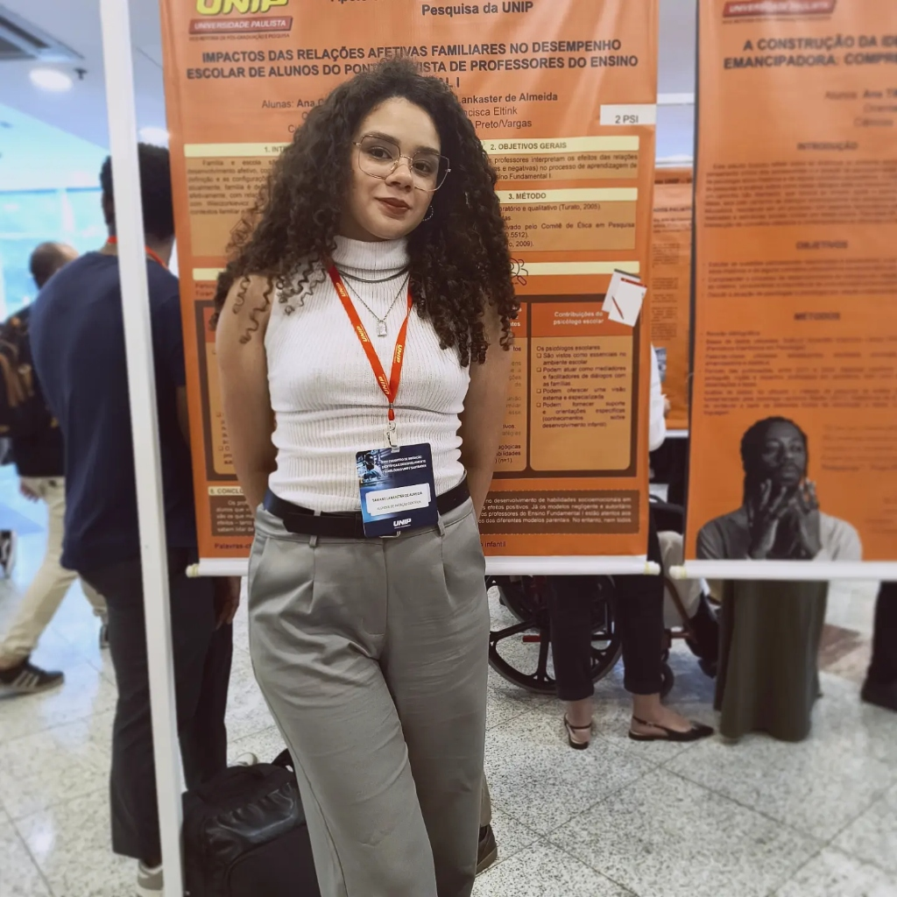

Tawane Lankaster
Psicologia & Cuidado Humanizado
Acolhimento profissional e sensível para crianças, adolescentes e adultos. Um espaço seguro e ético para compreender emoções, superar desafios diários e promover o desenvolvimento emocional saudável.
Infanto-Juvenil & Adultos
Presencial no Interior de SP & Online
Tawane Lankaster
Psicóloga • CRP 06/226726

Tawane
Lankaster • Psicóloga
Cuidado, escuta e dedicação para o desenvolvimento de crianças, jovens e adultos.
Cuidar da saúde mental é um passo essencial para viver com mais equilíbrio, autoconhecimento e qualidade de vida. Na terapia, você encontra um ambiente acolhedor, livre de julgamentos, onde cada sentimento e experiência são ouvidos com profundo respeito e ética.
Sou Tawane Lankaster (CRP 06/226726), psicóloga com atuação focada em psicoterapia infanto-juvenil e de adultos. Minha prática clínica integra o rigor técnico-científico com uma postura empática e sensível às particularidades de cada fase do desenvolvimento humano.
Atendo de forma presencial no Interior de SP e também na modalidade online para pacientes de todo o Brasil e do exterior. Seja no suporte ao desenvolvimento de crianças e adolescentes, seja no acompanhamento de adultos em busca de equilíbrio emocional, meu compromisso é caminhar ao seu lado.
Espaço Seguro & Acolhedor
Escuta ativa, acolhimento genuíno e sigilo ético rigoroso para que você e sua família sintam total confiança.
Desenvolvimento & Bem-Estar
Intervenções estruturadas para auxiliar na regulação emocional, autoconhecimento e enfrentamento de conflitos.
Atendimento Psicológico Especializado
Cuidado humanizado e acompanhamento psicoterapêutico direcionado às necessidades de cada momento da vida.
Psicoterapia Infantil
Acompanhamento lúdico e sensível para auxiliar crianças na expressão de suas emoções, manejo de frustrações, medos, dificuldades de comportamento e adaptação aos ambientes escolar e familiar.
Agendar no WhatsAppPsicoterapia para Adolescentes
Espaço seguro para acolher os desafios da juventude: questões de identidade, regulação emocional, ansiedade, pressões sociais e acadêmicas, favorecendo a autonomia e o autoconhecimento.
Agendar no WhatsAppPsicoterapia para Adultos
Processo terapêutico individual focado no alívio de angústias, gerenciamento do estresse, ansiedade, resolução de conflitos interpessoais e desenvolvimento de uma vida mais autêntica e equilibrada.
Agendar ConsultaOrientação Parental & Familiar
Suporte especializado a pais e responsáveis para compreender comportamentos infantojuvenis, fortalecer o diálogo em família e criar estratégias assertivas de convivência e afeto.
Saiba MaisAtendimento Presencial no Interior de SP
Consultório preparado com todo o conforto, climatização e acolhimento para atendimentos presenciais no Interior de São Paulo, proporcionando um ambiente tranquilo e seguro.
Consultar LocalPsicoterapia Online
Atendimento seguro via videochamada individual para adolescentes e adultos, permitindo que você realize sua sessão com total sigilo ético e conforto de onde estiver.
Agendar OnlineAcolhimento & Presença
Conheça mais sobre a Psicóloga Tawane Lankaster e o ambiente preparado para receber você.


Por que escolher o acompanhamento com Tawane Lankaster?
Um processo terapêutico construído com responsabilidade técnica, sensibilidade humana e dedicação integral.
Acolhimento Sem Julgamentos
Espaço livre de cobranças para falar abertamente sobre dores, angústias e sentimentos em um ambiente acolhedor.
Sigilo & Ética Profissional
Compromisso irrestrito com o Código de Ética Profissional do Psicólogo (CRP 06/226726) e confidencialidade.
Olhar Infanto-Juvenil & Adultos
Sensibilidade para compreender cada fase do desenvolvimento humano, integrando família e rotina com afeto.
Agendamento Descomplicado
Comunicação direta e rápida através do WhatsApp para tirar dúvidas e escolher o melhor dia e horário.
Relatos de Acolhimento & Evolução
Experiências de quem encontrou na psicoterapia um caminho de apoio e transformação.
"A Tawane tem um carinho e uma sensibilidade incríveis com meu filho. As sessões ajudaram muito no comportamento dele na escola e em casa. Sentimos uma segurança enorme no trabalho dela."
"Fazer terapia online com a Tawane me ajudou muito a lidar com as minhas crises de ansiedade e com a pressão do dia a dia. Ela é muito acolhedora e atenciosa em cada detalhe."
"O atendimento presencial no interior de SP é acolhedor e seguro. O processo terapêutico me deu clareza para tomar decisões importantes e viver com mais leveza."
Perguntas Frequentes
Esclareça suas dúvidas sobre o acompanhamento psicoterapêutico e modalidades de atendimento.
Fale com Tawane Lankaster
Entre em contato para agendar sua consulta presencial no Interior de SP ou online de onde você estiver.
Atendimento Presencial
Interior de SP
Atendimento presencial em consultório acolhedor
Atendimento Online
Sessões por videochamada para todo o Brasil e exterior
Agendamentos no WhatsApp
Registro Profissional
Psicóloga Tawane Lankaster - CRP 06/226726